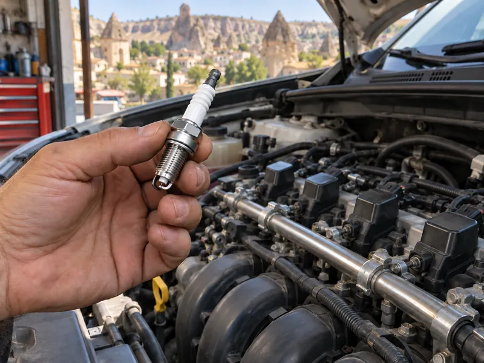

Araç TekniğiKonu 2 / 1054 çıkmış soru
Yakıt ve ateşleme sistemleri
Yakıtın depodan silindire ulaşmasını ve havanın temizlenmesini sağlayan yakıt sistemini, benzinli motorlarda karışımı ateşleyen ateşleme sistemini ve bu sistemlerde sık görülen arızaları anlatır.

1Konu anlatımı
Akılda kalsın
- Benzinli motorda sıkıştırılmış yakıt-hava karışımını tırnakları arasında çaktığı kıvılcımla ateşleyen parça bujidir.
- Endüksiyon (ateşleme) bobini aküden gelen düşük gerilimi bujide kıvılcım oluşturacak yüksek gerilime yükseltir; distribütör bu gerilimi ateşleme sırasına göre bujilere dağıtır.
- Hava filtresi kirlenirse motora yeterli hava giremez; motor çekişten düşer, yakıt tüketimi artar ve yanma bozulur.
- Dizel motorda besleme pompası yakıtı depodan enjeksiyon pompasına, enjeksiyon pompası da basınçlı motorini sırasıyla enjektörlere gönderir.
- Isıtma (kızdırma) bujileri soğuk havada silindirdeki havayı ısıtarak dizel motorun kolay çalışmasını sağlar; arızalıysa motor geç çalışır.
- Buji kablolarından biri çıkarsa motor sarsıntılı çalışır; yakıtta toz, su veya pislik varsa motor düzensiz ve tekleyerek çalışır.
- Islanarak stop eden ya da nemde zor çalışan benzinli motorda buji kabloları, bobin ve distribütör kurulanır.
Yakıt sisteminin görevi
Yakıt sistemi, yanma için gereken yakıtı ve temiz havayı uygun oranda silindirlere ulaştırır. Benzinli motorlarda görevi silindire benzin-hava karışımı göndermektir; dizel motorlarda ise motorini yüksek basınçla silindirdeki sıkıştırılmış sıcak havanın üzerine püskürtür. İçten yanmalı motorlarda benzin, motorin ve LPG yakıt olarak kullanılabilir. Buji ile ateşlemeli motorların yakıtı benzindir (bu motorlar uygun donanımla LPG de yakabilir); motorin ise dizel motorların yakıtıdır.
Yakıt sisteminin elemanları
- Yakıt deposu: Aracın belli bir mesafe gidebileceği kadar yakıtı araç üzerinde taşır.
- Yakıt pompası: Yakıtı depodan emerek basınçla motora gönderir. Karbüratörlü motorlarda yakıtı karbüratöre pompalayan bu parçaya benzin otomatiği de denir.
- Yakıt filtresi: Yakıttaki toz, pas, su gibi yabancı maddeleri tutarak pompanın ve enjektörlerin zarar görmesini önler. Periyodik bakımı yapılmazsa tıkanır ve motora yeterli yakıt ulaşmaz.
- Hava filtresi: Silindirlere alınan havadaki toz ve kum zerrelerini tutar; silindir ve pistonların aşınmasını önler, verimli yanma sağlar.
- Enjektör: Yakıtı basınçla silindire veya emme manifolduna püskürten yakıt enjeksiyon sistemi parçasıdır.
- Karbüratör: Karbüratörlü (eski tip) benzinli motorlarda benzin ile havayı uygun oranda karıştıran elemandır. Soğuk motorun kolay çalışması için havayı kısıp zengin karışım (az hava, fazla yakıt) hazırlayan tertibata jikle denir. Motor ısınınca jikle kapatılmalıdır; aksi hâlde yakıt tüketimi artar.
Motorun gaz verilmeden çalıştığı devri belirleyen rölanti ayarı yakıt sisteminde yapılan bir ayardır. Yakıt sisteminde yakıt seviyesi, yakıt kaçağı ve yakıt filtresi kontrol edilir; antifriz kontrolü ise soğutma sistemine aittir.
Dizel motorda yakıt yolu
Dizel motorda yakıt şu yolu izler: Depo → Besleme pompası → Yakıt filtresi → Yakıt enjeksiyon pompası → Enjektörler. Besleme pompası depodaki yakıtı emip filtreden geçirerek enjeksiyon pompasına gönderir. Enjeksiyon pompası motorini yüksek basınca çıkarır ve ateşleme sırasına göre enjektörlere gönderir. Enjektörler de motorini sıkıştırılmış sıcak havanın üzerine püskürtür. Hava filtresi, enjeksiyon pompası ve enjektörler yakıt sisteminin elemanlarıdır.
Dizel motorda yakıt, sıkıştırılan havanın sıcaklığıyla tutuşur. Soğuk havada bu sıcaklık yetersiz kalabileceğinden ısıtma (kızdırma) bujileri ilk çalıştırmada silindir içindeki havayı ısıtır. Kontak açıldığında göstergede kızdırma ikaz ışığı yanar; ışık sönünce marşa basılır. Isıtma bujisi arızalıysa motor soğuk havada geç çalışır.
Dizel araçta depodaki yakıt biterse pompa yakıt yerine hava çeker ve yakıt sistemi hava yapar; depo doldurulsa bile sistemin havası alınmadan motor çalışmayabilir. Bu yüzden yakıt ikaz ışığı yandığında en kısa sürede yakıt alınmalıdır.
Ateşleme sistemi (benzinli motorlar)
Ateşleme sisteminin görevi, silindirdeki sıkıştırılmış yakıt-hava karışımını doğru anda ateşlemektir. Elektrik akımı şu sırayla ilerler:
- Akü: Sistemin elektrik kaynağıdır.
- Kontak anahtarı: Devreyi açıp kapatır.
- Endüksiyon (ateşleme) bobini: Aküden gelen düşük gerilimi, buji tırnakları arasında kıvılcım oluşturabilecek binlerce voltluk yüksek gerilime yükseltir.
- Distribütör: Bobinde yükseltilen yüksek gerilimi ateşleme sırasına göre bujilere dağıtır.
- Buji: Gelen yüksek gerilimi tırnakları arasında kıvılcıma dönüştürür; sıkıştırma zamanının sonunda karışımı ateşleyerek yanmayı başlatır.
Arıza belirtileri ve nedenleri
| Belirti | Muhtemel neden |
|---|---|
| Motor sarsıntılı çalışıyor | Buji kablolarından biri çıkmış; o silindirde ateşleme olmuyor. |
| Bujide kıvılcım oluşmuyor | Endüksiyon bobini kablosu çıkmış; bujiye yüksek gerilim ulaşmıyor. |
| Motor düzensiz ve tekleyerek çalışıyor | Kirli yakıt: toz, su veya pislik filtre ve enjektörleri tıkıyor. |
| Motor çekişten düşüyor, yakıt tüketimi artıyor | Hava filtresi kirli; karışım zenginleşiyor ve yanma tam olmuyor. |
| Normal yanma yok, güç kaybı var | Bujiler ayarsız, aşınmış ya da kurum bağlamış; kıvılcım zayıf. |
| Motor zor çalışıyor | Enjektör arızası; yakıt düzgün püskürtülemiyor. |
| Dizel motor soğukta geç çalışıyor | Isıtma bujisi arızalı. |
Nemli havada, araç yıkandıktan sonra ya da su birikintisinden geçerken buji kabloları, bobin ve distribütör ıslanırsa yüksek gerilim kaçar ve kıvılcım zayıflar. Benzinli motor zor çalışıyor veya ıslanarak stop ettiyse ateşleme sistemi parçaları kurulanır. Arka arkaya marş yapmak sorunu çözmez, yalnızca aküyü boşaltır.
2Bu konunun soruları
MEB sınavlarında bu konudan çıkmış 54 soru (13 tanesi en az üç sınavda soruldu). Her soruda doğru cevabı ve açıklamasını hemen görürsünüz.
Hangi sorular?
Sıralama